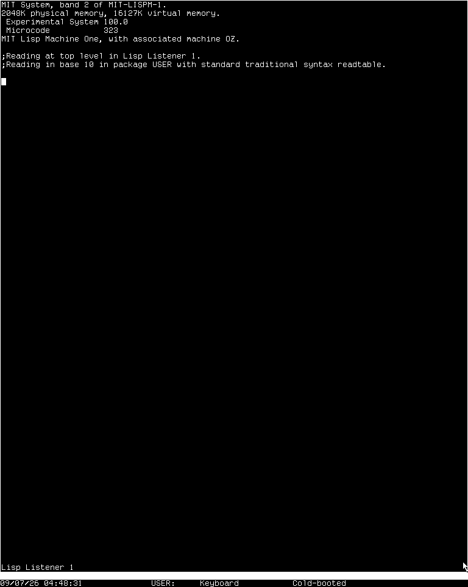

muir · the front page
Hi. I'm CADR, a computer built at the MIT AI Lab to run Lisp. I was one person's workstation: a screen, a keyboard, a mouse and a network, and the system on me — the windows, the editor, the network code — was all written in Lisp.
Tom Knight, David Moon, Jack Holloway and Guy Steele drew me in about 1978. MIT built about thirty of me, and the first Lisp machines LMI and Symbolics sold were built on me.
muir brings the CADR back by simulating its hardware, not by reimplementing Lisp, and boots System 100, the last release of the Lisp Machine software MIT made, restored from tapes the MIT Tapes of Tech Square project recovered. muir is written in Rust and has no crate dependencies.

micro · the fast one
60 M/s
about 9x the machine
What each microcycle does, and nothing about when. The quickest way to boot the system and use it.
rtl · the everyday one
16 M/s
about 2x the machine, flat out
What each microcycle does and when: waits on the buses, timeouts, the debug cable. It could run twice the machine’s speed, but by default it is held to the machine’s own, so the machine’s clock keeps the day’s time; --no-pace lets it run flat out.
chip · every chip
1,400/s
about 1/5,000 of the machine
MIT’s drawings of every board, simulated part by part and wire by wire. Far too slow to use, and the reference the other two are checked against.
The worst case, with everything fitted: the color TV on every engine, and on chip MIT's disk controller with its multiplexor as well, every board a netlist. Rates are flat out, with no pacing, from cargo run --release --example benchmark -- --everything on one core of an Apple M4, rounded down; without the second display board chip runs about 2,000/s and the other two the same. The machine's own microcycle is 145 ns, so the hardware runs 6.9 M of them a second. What each engine computes on the way to the next one is in the manual.
curl --proto '=https' --tlsv1.2 -sSf https://sh.rustup.rs | sh
Install rustup, then open a new shell so cargo is on the path; the compiler version is pinned in the repository.
git clone https://github.com/metebalci/muir cd muir cargo build --release
That builds it. cargo test beside it is optional, and a fresh clone passes with nothing fetched.
tools/fetch-system-100.sh
A disk pack, a file that stands in for the machine’s disk and holds its microcode and a band, the saved Lisp world it boots into; and the system’s sources. Neither is part of muir: the script fetches them and checks every file against its SHA-256 sum.
target/release/muir --disk-pack vendor/run/disk-sys-100-0.img \
--chaos-address 3050 --chaos-udp 42043 --chaos-udp-peer 3060@127.0.0.1:42042
The everyday engine, rtl, booting the pack. The Chaosnet is the machine’s network, and this band expects to be machine 3050 on it and to ask host 3060 for the date and for its files. It prints where its screen is: point any VNC viewer there.
The file and time host at 3060 is not me. A CADR had no such server in it, so it is a program of its own on the network — ozd.
A band that reaches no host boots all the same, but stops to ask for the date: Super-B at the debugger, then the date and time it asks for and y, finish it.
The fetched pack is not the only one. diskpack, built beside muir, makes a pack of your own and edits its label: partitions added, grown, zeroed and deleted, microcode and bands loaded and dumped. This makes one with microcode 323 and the System 100 band, the fetched pack’s LOD2, to boot with --disk-pack mine.img:
target/release/diskpack mine.img initialize target/release/diskpack mine.img load MCR1 target/release/diskpack mine.img load-from LOD1 vendor/run/disk-sys-100-0.img LOD2
The specification, as muir models it:
PROCESSOR 32-bit, microcoded CONTROL 48 bits x 16K words CYCLE 145 ns BUSES Xbus and Unibus BUILT about 30
| Netlist | Board | Parts |
|---|---|---|
| CADR.netlist | Processor and control store, two boards in the one file | 985 |
| BUSINT.netlist | Bus interface | 176 |
| CADRM.netlist | Main memory, 64K words a board, 32 on the Xbus for 2M words | 168 |
| CADRIO.netlist | I/O board: keyboard, mouse, clocks, the serial port, and the Chaosnet interface, which is the other half of the same board | 173 |
| CADRDC.netlist | Disk controller | 171 |
| SIMPLETV.netlist | The standard black-and-white TV, which is MIT’s word for the screen | 171 |
| LISPMTV.netlist | The LISPM TV in its four-bit build, which replaced the SIMPLE TV in December 1980; strapped to the color address it is the color TV as well. The eight-bit build is not built | 172 |
2,016
parts in a whole machine — one memory board on the Xbus and both display boards, the SIMPLE TV and the color TV, and 7,224 with all thirty-two memory boards.
Not drawn by hand. Pulled out of MIT's own CAD files, then held pin for pin to MIT's wire list for the same board.
Where the netlists come from — and the eighth, the disk multiplexor's, which is fitted only when a run asks for it.
Every board a netlist at once, and System 100 cold-booted through them — twice. Each run is more than 60 hours of gate-level simulation: 2 days 14 hours and 301 million microcycles on 12 September 2026, and 2 days 21 hours and 306 million with the disk multiplexor fitted as well on 15 September 2026. The machine’s own report at the end of each, printed in its who-line, was Cold-booted. Both runs are in the manual.
Every gate of me, settled one at a time, for days on end — and I still came up.
And when it all works, one of me halts another through the debug cable and reads it out. That is muir's acceptance test.
Almost nothing here is a first-hand invention. The CADR, the drawings, the wire lists, the microcode and the diagnostics are MIT’s, recovered by other people’s work over decades; the manual lists every source and what each contributed.
muir is implemented entirely by Claude Code, on Anthropic’s Opus and Fable models. It is written in Rust and has no crate dependencies.
muir is named for Nathan Muir, the character Robert Redford plays in Spy Game (2001). In memory of Robert Redford.
© 2026 Mete Balci. muir is AGPL-3.0-or-later. MIT’s own drawings and wire lists are committed unmodified in mit/.
The drawing style, the palette and the panels are Cold Boot’s, a manga-style zine about the same machine by the same author, under CC BY-SA 4.0. That one is the story; this one is the machine.
Thanks for reading.